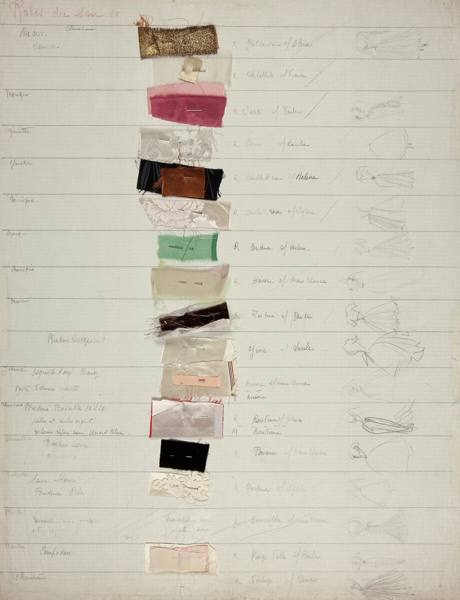
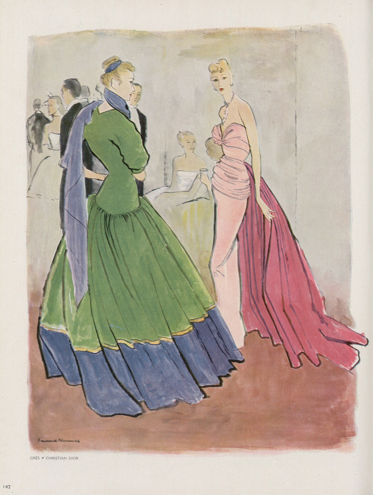

Chart
Each chart recorded the designs in a collection by type, who made it, for whom, and with textile swatches. This ensured the ateliers’ work was evenly distributed and that the mannequins had time to change during daily presentations.
Dior Héritage Collection, Paris



![Detail photographs of the Rose France dress on a dress form against a black background. Clockwise from top left: three quarters back profile of the short sleeve and bodice with buttons down the back; the waist and hip of the back of the dress featuring the buttons of the bodice and the top of the train; the back of the bodice buttoned up and the train; the back of the bodice with the single sleeve and buttons down the back; the back of the bodice unbuttoned and folded open above the train to reveal the inner beige lining.](img/2/grid/DIOR_HERITAGE_ROM_TORONTO_09_HCAH_1947_ROBE_ROSE_GP08.jpg) *
*
Right: A strong cotton twill is used to make the corset in this strapless goddess gown. Later, a more refined inner corset was perfected.
* Photos Laziz Hamani
![Detail photographs of the Rose France dress on a dress form against a black background. Clockwise from top left: three quarters back profile of the short sleeve and bodice with buttons down the back; the waist and hip of the back of the dress featuring the buttons of the bodice and the top of the train; the back of the bodice buttoned up and the train; the back of the bodice with the single sleeve and buttons down the back; the back of the bodice unbuttoned and folded open above the train to reveal the inner beige lining.](img/2/grid/DIOR_HERITAGE_ROM_TORONTO_09_HCAH_1947_ROBE_ROSE_GP08b.jpg) *
*
![Detail photographs of the Rose France dress on a dress form against a black background. Clockwise from top left: three quarters back profile of the short sleeve and bodice with buttons down the back; the waist and hip of the back of the dress featuring the buttons of the bodice and the top of the train; the back of the bodice buttoned up and the train; the back of the bodice with the single sleeve and buttons down the back; the back of the bodice unbuttoned and folded open above the train to reveal the inner beige lining.](img/2/grid/ROM2017_15813_2.jpg)
![Detail photographs of the Rose France dress on a dress form against a black background. Clockwise from top left: three quarters back profile of the short sleeve and bodice with buttons down the back; the waist and hip of the back of the dress featuring the buttons of the bodice and the top of the train; the back of the bodice buttoned up and the train; the back of the bodice with the single sleeve and buttons down the back; the back of the bodice unbuttoned and folded open above the train to reveal the inner beige lining.](img/2/grid/DIOR_HERITAGE_ROM_TORONTO_09_HCAH_1947_ROBE_ROSE_GP11.jpg) *
*
![Detail photographs of the Rose France dress on a dress form against a black background. Clockwise from top left: three quarters back profile of the short sleeve and bodice with buttons down the back; the waist and hip of the back of the dress featuring the buttons of the bodice and the top of the train; the back of the bodice buttoned up and the train; the back of the bodice with the single sleeve and buttons down the back; the back of the bodice unbuttoned and folded open above the train to reveal the inner beige lining.](img/2/grid/DIOR_HERITAGE_ROM_TORONTO_09_HCAH_1947_ROBE_ROSE_GP10.jpg) *
*


L’Officiel de la couture, 1947
© Les Éditions Jalou « L’Officiel 1947 »

Photo Frères Séeberger.
Source: Bibliothèque nationale de France